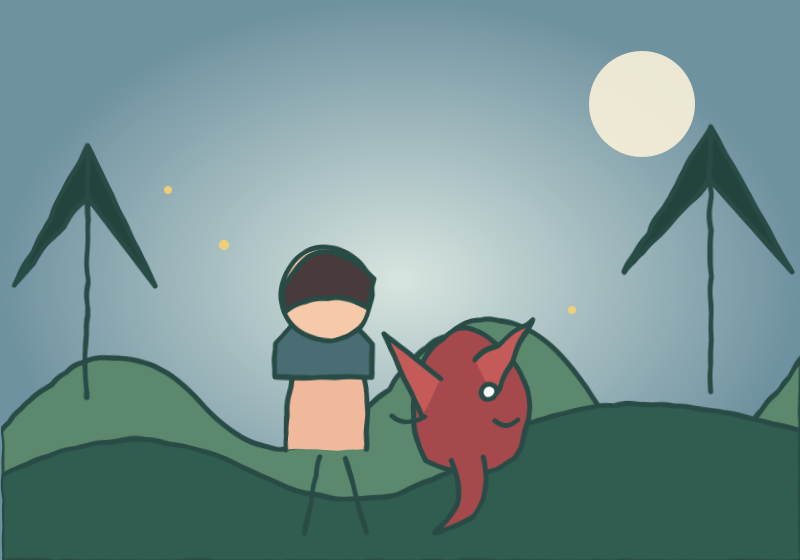
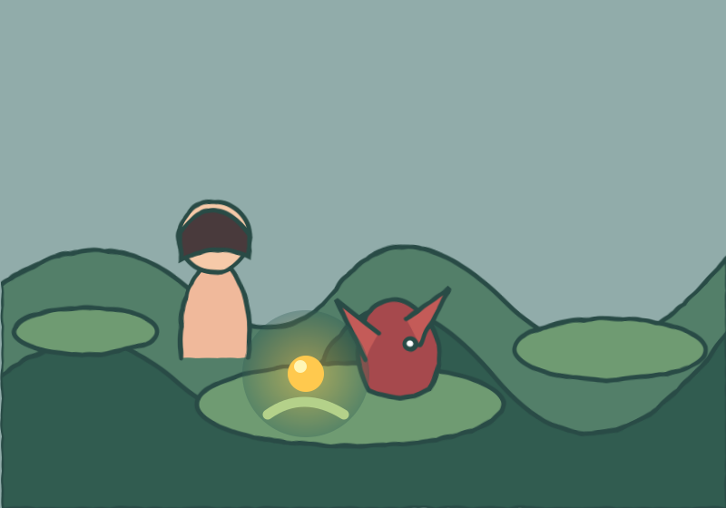
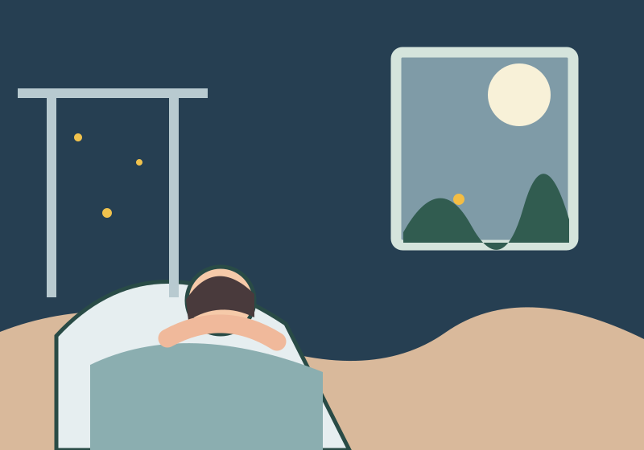

EN GODNATTSAGA FÖR 0–3 ÅR
Den lilla draken och den borttappade glöden
En varm liten saga om att leta, lysa och hitta hem.
Tryck för att få sagan uppläst.

När kvällen blev blå
När kvällen blev blå, tittade barnet ut genom fönstret. Bakom den gamla stenen blinkade skogen. Bara barnet kunde se den.
"Hej!" viskade en röst. Det var Den lilla draken. Hen hade små lingonröda vingar och en svans som viftade när hen blev glad.
"Min glöd är borta," sa draken. "Utan den blir min kvällsmacka alldeles kall."

En liten prick av ljus
Barnet och draken gick försiktigt mellan mossiga stenar. De lyssnade efter ett pling. De tittade under ett blad. De tittade bakom en liten svamp.
"Där!" sa barnet.
I mossan låg en pytteliten glöd. Den lyste mjukt som en varm lampa.
Glöden hittar hem
Draken höll glöden nära magen. "Tack," sa hen. "Nu kan vi värma mackan – men först kan glöden värma dina händer."
Barnets händer blev varma och skogen blev lugn. Ugglan sa god natt. Löven susade god natt.
Vid den gamla stenen vinkade Den lilla draken. "Vi ses när kvällen blir blå igen."
Hemma under täcket
Barnet gick hem till sitt vanliga rum. Under täcket kändes händerna fortfarande lite varma.
Utanför fönstret glimmade en enda liten prick bland träden.
God natt, lilla glöd.
God natt, lilla drake.
God natt, du.
